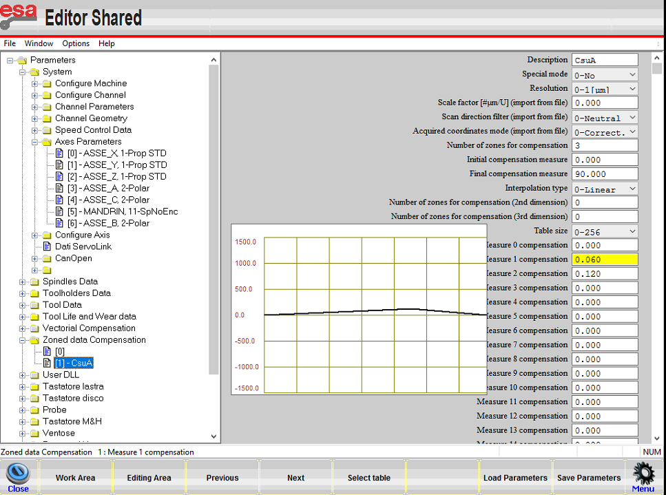

Troubleshootings EN-GB Home
Spazio per gli allarmi il lingua inglese
Elenco pagine
TAG
Troubleshooting articles
Wrong pieces measures
Check the tool data
Inclined cuts
- Move the disk to touch the bench
- Acquire the bench quota
- Reset Z axis
- Move the disk to the surface of the material and touch it
- Read the value in the Z axis (this is the thickness)
- Put this value in the thickness of the material
- Try to cut without the use of the probe.
PE0000 General emergency
Explanation of the error
Machine in emergency situation, the red light is flashing and the machine does not move. The emergency circuit is open.
Possible causes
- Emergency button pressed;
- Emergency button failure;
- Failure of the safety control unit inside the electrical panel;
- Multi-core cable connected from the console to the electrical panel faulty;
Possible solutions
- Unlock emergency button:

- Check the correct functioning of the button and the connected electrical contacts located underneath the mushroom itself (console button panel);
- Check the correct functioning of the control unit. In order to do this, first ensure that the emergency circuit is closed as per the electrical diagram, then ensure that the control unit must function in the following way:
- With emergency button pressed (emergency circuit open):
- With emergency button released (emergency circuit closed):
- With emergency button pressed (emergency circuit open):
- Check the continuity between the cables connected to the emergency button contacts and the respective cables connected to the respective terminal block in the electrical panel. Find the information on the diagram;
Related articles
PE0003 Lack of mains voltage
Explanation of the error
The machine is in an alarm situation for the general power supply voltage of the panel is absent.
The machine will automatically turn off after one minute to safeguard the electronic components.
Possible causes
- Lack of voltage entering the electrical panel;
- Voltage relay present on UPS faulty or incorrect connections;
Possible solutions
We recommend the help of a Donatoni technician present on site or an electrician.
- Check with a multimeter in AC functionality whether voltage is present at the input of the machine's main switch; if there is no voltage, the problem is upstream of the machine;
- Check whether the relay relating to the voltage present on the UPS receives 220 V AC at the input and 0 V DC at the output (the relay must be connected NC);
Related articles
PE0005 Lack of command enablement
Explanation of the error
It is displayed when the machine is turned on or after the emergency button is released.
Possible causes
- The command enable button (RESET) has not been pressed;
- Malfunction of the command enabling button (RESET) on the electrical panel;
- Pilz safety control unit malfunction.
Possible solutions
- Press the reset button on the electrical panel
- Check the contacts of the command enabling button, i.e. when I hold down the button the contact must close and the green start LED must appear on the control unit.
If necessary, replace the button contacts;
Related articles
PE0006 Bench pump thermal active
Explanation of the error
Anomaly on the bench lifting system, it offers protection on the system against both short circuits and overloads.
To reset the switch, move the selector to 0 and then to 1.

Possible causes
The causes can be divided into Mechanical or Electrical problems
- Oil pump motor blocked.
You can try to start the bench pump and see if it actually turns.
In case of complete blockage, change the oil pump; - The oil inside the tank is insufficient;
- The oil inside the tank is very dirty or the filter is dirty;
- Folding bench blocked
- Short circuit between motor phases;
- Missing a phase;
- Motor windings short circuit;
- Faulty switch
Possible solutions
The following photos show the pump with the relevant points of interest marked;

First check that the engine cooling fan turns freely, for exemple try with a screwdriver to move the fan.
Iif the fan is blocked, the pump must be changed.Check the oil level with a clean stick, and check for deposits at the bottom:
- If the level is low, top up with 32 density oil and check periodically if the system empties again as there could be leaks;
- If there is a lot of dirt, empty the tank (there is a cap in the tank) and clean it with diesel and then fill it;
- Check whether the piston joints and the bench joints are not blocked and then grease the relevant points.

- Check that there is no continuity between the various phases; disconnect the cable from the pump's electrical box, isolate the terminals and reset the switch activate the oil pump if it trips the problem could be the cable;
- Measure the input voltage with a multimeter and check the presence of all the phases; for example, if a phase is missing, check that all the terminals are tight;
- If carrying out the test in point 1 the switch does not trip, connect the cable to the pump.
If the switch trips when starting the pump, the problem is the pump and therefore it will need to be replaced;
Related articles
PE0007 Disk thermal alarm triggered
Spiegazione dell'errore
L’allarme termico disco è generato qualora l’inverter che gestisce la rotazione del mandrino abbia malfunzionamenti.
Possibili cause
Le cause di questo errore sono da valutare di volta in volta poiché si dovrà aprire il quadro elettrico e controllare i messaggi di errore dell'inverter.
NB: per aprire il quadro elettrico effettuare la procedura di
Apertura quadro elettrico acceso
Possibili soluzioni
Le soluzioni al problema dipenderanno dallo stato dell'inverter, importante è valutare se il problema è dato dai collegamenti Post inverter o Pre inverter:
Per esempio provare a scollegare il cavo del mandrino e provare ad avviare il disco e vedere se si ripresenta l'errore.
Articoli collegati
PE0008 Collision limit switch sensor active
Spiegazione dell'errore
Lo stato del sensore del Finecorsa collisione posto sopra alla chiocciola dell'asse Z è cambiato di stato.
Possibili cause
- La macchina si trova piantata nel materiale o nel banco e quindi il sensore sopra la chiocciola dell'asse Z si trova coperto;
- il sensore è guasto
- il cavo dal sensore al ripartitore passivo sul carro guasto;
- possibili guasti nei cavi dal ripartitore passivo al quadro
Possibili soluzioni
- Premere pulsante reset sulla consolle in maniera da fare sparire il messaggio di errore riguardante la collisione, e alzarsi lentamente con l'asse Z fino a sollevarsi dal banco/materiale
- Verificare il funzionamento del sensore, ovvero verificare che sia acceso il led sul sensore, e verificare che posizionando un pezzo metallico davanti il sensore il led si spegne; in caso di sensore malfunzionante sostituire;
- se il sensore è spento, provare a cambiare ingresso nel ripartitore passivo e vedere se il sensore si accende (ad es collegarlo al posto del sensore asse X), se non si hanno differenze il problema potrebbe essere il cavo o i collegamenti fino al quadro.
Articoli collegati
PE0009 Collision quota requested
Spiegazione dell'errore
Questo messaggio di errore appare ogni volta che si comanda alla macchina in MDI di posizionarsi ad una quota fuori dai limiti delle corse software della macchina;
Possibili cause
- Si è impostata la quota banco molto alta;
- Si comanda la macchina in MDI di andare in un punto che non può raggiungere con le sue corse.
Possibili soluzioni
- Una volta che compare l'errore, premere il pulsante di reset sulla consolle, e verificare l'effettiva quota banco utilizzando i comandi manuali della consolle (verificare valore diametro disco ecc. stare attenti anche all'invlinazione asse A)
- Controllare se effettivamente se la macchina riesce a raggiungere le quote obiettivo che vengono impostate;
Articoli collegati
PE0010 X axis extra current
Spiegazione dell'errore
Durante i cicli di lavoro automatico il plc può generare un allarme di Extracorrente per ogni singolo asse, dovuto al superamento della portata massima di sforzo del motore in questione.
Possibili cause
- Sforzo eccessivo istantaneo in direzione X
- Malfunzionamento motore asse X
Possibili soluzioni
- Premere il pulsante di reset, per resettare l'errore, successivamente premere il pulsante di emergenza, riabilitare i comandi e riprendere il normale utilizzo;
- Dopo avere provato ad eseguire il punto 1, se si ripresenta l'errore muovendosi a vuoto in qualunque direzione, sostituire il motore asseX
Articoli collegati
PE0011 Y axis extra current
Spiegazione dell'errore
Durante i cicli di lavoro automatico il plc può generare un allarme di Extracorrente per ogni singolo asse, dovuto al superamento della portata massima di sforzo del motore in questione.
Possibili cause
- Sforzo eccessivo istantaneo in direzione Y
- Malfunzionamento motore asse Y
Possibili soluzioni
- Premere il pulsante di reset, per resettare l'errore, successivamente premere il pulsante di emergenza, riabilitare i comandi e riprendere il normale utilizzo;
- Dopo avere provato ad eseguire il punto 1, se si ripresenta l'errore muovendosi a vuoto in qualunque direzione, sostituire il motore asseY
Articoli collegati
PE0012 Z axis extra current
Spiegazione dell'errore
Durante i cicli di lavoro automatico il plc può generare un allarme di Extracorrente per ogni singolo asse, dovuto al superamento della portata massima di sforzo del motore in questione.
Possibili cause
- Sforzo eccessivo istantaneo in direzione Z
- Malfunzionamento motore asse Z
Possibili soluzioni
- Premere il pulsante di reset, per resettare l'errore, successivamente premere il pulsante di emergenza, riabilitare i comandi e riprendere il normale utilizzo;
- Dopo avere provato ad eseguire il punto 1, se si ripresenta l'errore muovendosi a vuoto, in qualunque direzione sostituire il motore asse Z
Articoli collegati
PE0013 A axis extra current
Spiegazione dell'errore
Durante i cicli di lavoro automatico il plc può generare un allarme di Extracorrente per ogni singolo asse, dovuto al superamento della portata massima di sforzo del motore in questione.
Possibili cause
- Sforzo eccessivo istantaneo in direzione A
- Malfunzionamento motore asse A
Possibili soluzioni
- Premere il pulsante di reset, per resettare l'errore, successivamente premere il pulsante di emergenza, riabilitare i comandi e riprendere il normale utilizzo;
- Dopo avere provato ad eseguire il punto 1, se si ripresenta l'errore muovendosi a vuoto, in qualunque direzione sostituire il motore asse A;
Articoli collegati
PE0014 C axis extra current
Spiegazione dell'errore
Durante i cicli di lavoro automatico il plc può generare un allarme di Extracorrente per ogni singolo asse, dovuto al superamento della portata massima di sforzo del motore in questione.
Possibili cause
- Sforzo eccessivo istantaneo in direzione C
- Malfunzionamento motore asse C
Possibili soluzioni
- Premere il pulsante di reset, per resettare l'errore, successivamente premere il pulsante di emergenza, riabilitare i comandi e riprendere il normale utilizzo;
- Dopo avere provato ad eseguire il punto 1, se si ripresenta l'errore muovendosi a vuoto, in qualunque direzione sostituire il motore asse C;
Articoli collegati
PE0015 spindle overcurrent
Spiegazione dell'errore
Durante i cicli di lavoro automatico il plc può generare un allarme di Extracorrente dell' elettromandrino, dovuto al superamento della portata massima di sforzo del motore in questione. La soglia viene impostata in base al tipo di lavorazione, e di conseguenza al numero di giri dell' elettromandrino.
Generalmente si inizia una lavorazione, si guarda il valore dell'assorbimento del disco/fresa successivamente si imposterà una valore di soglia 3/5A maggiore rispetto il valore assorbito durante il normale funzionamento.
Possibili cause
- Impostato un valore di soglia dell'allarme non corretto per il tipo di lavorazione;
- Assorbimento elettromandrino troppo elevato dovuto a lavorazioni con velocità troppo elevate.
- Utensile non adatto al tipo di lavorazione effettuata
- Cuscinetti da sostituire
Possibili soluzioni
- Correggere il valore di soglia ampere
- Diminuire gradualmente le velocità fino a trovare le velocità corrette
- Controllare l'utensile se è adatto alle lavorazioni che si stanno eseguendo, e se non è un utensile molto consumato e quindi non taglia
Articoli collegati
PE0016 Lack of water
Spiegazione dell'errore
Questo allarme è legato alla mancanza del segnale di ingresso del pressostato dell'acqua del disco, durante un ciclo automatico.
I pressostati sono in questa posizione e sono di due tipi:


Possibili cause
- Mancanza effettiva dell'acqua;
- Pressostato regolato per una pressione dell'acqua troppo alta;
- Pressostato guasto;
- Guasto tra collegamenti pressostato quadro.
Possibili soluzioni
- Controllare le motivazioni della mancanza d'acqua, se magari è solamente un calo di pressione.
- Regolare il pressostato alla pressione desiderata, per la regolazione dei pressostati seguire la procedura di regolazione in base al tipo di pressostato
- Sostituzione del pressostato con uno dello stesso tipo possibilmente;
- Controllare seguendo lo
Articoli collegati
PE0018 Nulla Feed set 0
Spiegazione dell'errore
Messaggio di errore che compare durante l'avvio di un ciclo automatico o semiautomatico, dovuto al fatto che qualche velocità di lavorazione è impostata a zero;
Possibili cause
- Impostata una o più velocità di lavorazione a 0mm/min sia in cicli automatici che in cicli semiautomatici;
Possibili soluzioni
- Cambiare i parametri di velocità di lavorazione con delle velocità diverse da zero
Articoli collegati
PE0019 Error during starting operation
Spiegazione dell'errore
Errore generico sugli azionamenti, In caso delle macchine Jet e Spin il problema sarà sull' azionamento utilizzato come Alimentatore :
Possibili cause
- Se l'alimentatore montato è nuovo, potrebbero esserci dei parametri di configurazione non corretti (Messaggi di errore F09, F21 sul display dell'alimentatore);
- Alimentatore è guasto;
Possibili soluzioni
- Collegarsi all'alimentatore con il cavo COM e riseguire la procedura di
- Controllare sul display dell'alimentatore il messaggio di errore ( F07, F09, F21) provare a riavviare la macchina e vedere se ricompare l'errore, valutare se è un problema legato a qualche motore;
Articoli collegati
PE0021 Folding bench not in position
- Spiegazione dell'errore
- Possibili cause
- Possibili soluzioni
- NB: Ricordare di riabilitare il banco
- Articoli collegati
Spiegazione dell'errore
Il banco ribaltabile risulta fuori dalla posizione di parcheggio.

Possibili cause
Le possibili cause di questo allarme sono molteplici, sia di tipo meccanico sia di tipo elettrico:
- Il banco è inclinato e non tocca il fine corsa;
- Il banco è in posizione di parcheggio ma non tocca il fine corsa;
- Fine corsa del banco guasto;
- Collegamento tra fine corsa banco e quadro elettrico guasto.
- Il banco per qualche motivo meccanico ad esempio tubi rotti, olio mancante, pompa rotta non si riesce a riportare in parcheggio
Possibili soluzioni
!ATTENZIONE! Con l'allarme attivo la macchina non si può movimentare, quindi se la macchina non è in parcheggio saremo in una condizione di blocco, In Parametrix entrare nel primo "Lucchetto" premere il pulsante "Chiave inglese+Cacciavite" e disabilitare il banco, (Se versione Parametrix vecchia entrare in KvIsoGui.exe entrare nell'area riservata con password:"esagv" e disabilitare l'optional "Banco")
- Usare l'apposito selettore posto sulla consolle per posizionare il banco in parcheggio;
- Controllare se fisicamente il banco in posizione di parcheggio tocca o no il sensore, in caso non toccasse, controllare se il banco va in battuta sui bulloni in caso affermativo regolare il sensore in maniera tale da toccare il banco;
- Aprire KvIsoGui.exe premere il pulsante "Menù" aprire "Monitor I/O" verificare, premendo il finecorsa se l'ingresso relativo ad esso funziona.(FC_SUPP_LOW AT %IW4.13; * IW4.13 FC banco basso)
- Se l'ingresso non cambia di stato controllare con un Tester se il finecorsa funziona correttamente (per esempio se metto i puntalini sui morsetti NO quando premo il finecorsa devo chiudere il contatto)
- Se il fine corsa funziona correttamente bisognerà controllare i collegamenti; seguire lo
- Verificare il funzionamento della pompa e verificare che effettivamente l'impianto non sia guasto;
NB: Ricordare di riabilitare il banco
Articoli collegati
PE0023 Active muting alarm
Spiegazione dell'errore
L'allarme "Muting attivo" è generato automaticamente dal sistema ogni qualvolta viene tolta la chiave del selettore modale dall'apposita posizione sulla consolle.
Per ripristinare l'allarme è sufficiente inserire la chiave di sicurezza sulla consolle e armare la modalità lavoro.
Possibili cause
- Chiave del selettore modale non inserita o posizionata su 0;
- Collegamento elettrico guasto o errato;
Possibili soluzioni
- Girare la chiave o inserirla nell'apposita sede (il selettore deve essere su uno)
- Controllare che i collegamenti siano tutti corretti, controllare sullo
Articoli collegati
PE0027 Internal water missing
Spiegazione dell'errore
Questo allarme è legato alla mancanza del segnale di ingresso del pressostato dell'acqua interna, durante un ciclo automatico.
I pressostati sono in questa posizione e sono di due tipi:


Possibili cause
- Mancanza effettiva dell'acqua;
- Pressostato regolato per una pressione dell'acqua troppo alta;
- Pressostato guasto;
- Guasto tra collegamenti pressostato quadro.
Possibili soluzioni
- Controllare le motivazioni della mancanza d'acqua, se magari è solamente un calo di pressione.
- Regolare il pressostato alla pressione desiderata, per la regolazione dei pressostati seguire la procedura di regolazione in base al tipo di pressostato
- Sostituzione del pressostato con uno dello stesso tipo possibilmente;
- Controllare seguendo lo
Articoli collegati
PE0028 A-axis not in correct position
Spiegazione dell'errore
Il sistema genera il messaggio "Asse A non in posizione corretta" ogni volta che viene premuto il pulsante "Parcheggio" o il pulsante "Cambio utensile manuale" e l'asse "A" non si trova in posizione corretta (Zero gradi).
Possibili cause
- Si è premuto il pulsante P di parcheggio e l'asse A non si trova a 0.00° .
- Si è premuto il pulsante cambio utensile manuale e l'asse A non si trova a 0.00°
Possibili soluzioni
- Movimentare asse A in posizione di 0.00° prima di premere i pulsanti di parcheggio o cambio utensile manuale
Articoli collegati
PE0029 Faulty lubrication system
Spiegazione dell'errore
L'allarme impianto lubrificazione guasto viene visualizzato quando nel circuito di distribuzione del grasso c'è un inceppamento e non riesce a fuoriuscire il grasso; verificare che sia presente il grasso nel serbatoio in quantità minima e successivamente analizzare il percorso di distribuzione.
L'allarme serbatoio grasso vuoto indica che è necessario riempire il serbatoio.
In allegato il manuale della polipump:
Possibili cause
- Serbatoio del grasso vuoto;
- Grasso inceppato in uscita dalla pompa;
- Errore di cablaggio della pompa del grasso.
Possibili soluzioni
- Attraverso l'apposito punto di ricarica pompargli all'interno della pompa il Grasso corretto EP1;
- Verificare che nel punto di uscita del grasso dalla pompa non ci siano ostruzioni o che il grasso sia vecchio e solido;
- Verificare tramite l'utilizzo dello
NOTA: PER RESETTARE L'ERRORE, PREMERE PER QUALCHE SECONDO IL (PULSANTE START CICLO)+ (PULSANTE -) E RESETTARE ERRORI DIRETTAMENTE SULLA POMPA PREMENDO RESET
Articoli collegati
PE0031 Panel overtemperature
Spiegazione dell'errore
Questo errore compare quando il termostato all'interno del quadro elettrico rileva una temperatura più alta della temperatura massima impostata che solitamente è a 45° C
Possibili cause
- Condizionatore o ventola del quadro guasti;
- Termostato regolato male;
Possibili soluzioni
- Controllare che la ventola di ricircolo funzioni correttamente
- Controllare che il termostato relativo alla sovratemperatura all'interno del quadro sia a 45 gradi controllare sullo schema elettrico, inoltre se già impostato alla temperatura corretta controllare che apra e chiuda il contatto.
Articoli collegati
PE0041 CH 0 Programm without M2-M30
Sintomo:
- utilizzando la funzione TEST ISO di compare il messaggio "PE0041 CH 0 Programma senza M2-M30" su qualsiasi file ISO
- gli stessi file ISO si riescono ad eseguire normalmente
Il problema è dovuto al file attachments/PE0041_CH_0_Programm_without_M2-M30/fnzm30.srt su CNC del cliente.
Soluzione:
- scaricare il file attachments/PE0041_CH_0_Programm_without_M2-M30/fnzm30.srt in allegato
- copiare nella cartella C:\kvara\DiscoC\Iso della macchina del cliente
- aprire KvIsoGui
- Menù > Gestione Archivi
- nello spazio di sinistra portasi nella cartella C:\kvara\DiscoC\Iso
- cliccare sullo spazio di destra
- cliccare "Cambia Unità" nei pulsanti in basso
- selezionare il disco C del CNC
- selezionare il file attachments/PE0041_CH_0_Programm_without_M2-M30/fnzm30.srt nella cartella C:\kvara\DiscoC\Iso dello spazio di sinistra
- cliccare "Copia" nei pulsanti in basso
File attachments/PE0041_CH_0_Programm_without_M2-M30/fnzm30.srt di seguito.
PE0065 Vacuum pump thermal switch active
Spiegazione dell'errore
Anomalia sull'impianto di sollevamento banco; L'interruttore magnetotermico relativo alla pompa del vuoto è scattato, esso offre una protezione sull'impianto sia ai cortocircuiti sia ai sovraccarichi. Per riarmare l'interruttore spostare il selettore a 0 e successivamente a 1;
Possibili cause
Le cause possono essere suddivise in problemi Meccanici o Elettrici
- Motore pompa del vuoto bloccato, si può provare ad avviare la pompa del vuoto e vedere se effettivamente gira.
- La vasca della pompa del vuoto è vuota
- Cortocircuito tra fasi motore;
- Mancanza di una fase;
- Cortocircuito avvolgimenti del motore;
- Interruttore Guasto o impostato la soglia di assorbimento su un valore errato
Possibili soluzioni
- Per prima cosa controllare che la ventolina di raffreddamento del motore giri libera, ovvero con un cacciavite per esempio provare a muovere la ventola, se risulta bloccata bisogna
- riempire fino al livello di troppo pieno la vasca
- Controllare che non ci sia continuità tra le varie fasi; scollegare il cavo dalla scatola elettrica della pompa, isolare i terminali e riarmare l'interruttore attivare la pompa dell'olio se scatta il problema potrebbe essere il cavo;
- Misurare la tensione in ingresso con un multimetro e verificare la presenza di tutte le fasi, se manca ad esempio una fase controllare che siano tirati tutti i morsetti;
- Se effettuando la prova al punto 1 l'interruttore non scatta, collegare il cavo alla pompa, se, avviando la pompa l'interruttore scatta il problema è la pompa quindi sarà da sostituire;
- Se effettuate le prove precedenti il magneto termico continua a scattare il problema potrebbe essere il l'interruttore stesso, inoltre la soglia deve essere regolata a 4A
Articoli collegati
PE0066 Lack of air
Spiegazione dell'errore
Questo allarme appare quando il pressostato presente sul gruppo aria generale della macchina rileva un importante calo di pressione
Possibili cause
- Pressione della linea non sufficiente;
- Sensore non regolato correttamente;
- Guasto del sensore;
- Variazione improvvisa pressione in ingresso
Possibili soluzioni
- Controllare sul manometro del distributore d'aria generale della macchina se sono presenti almeno 6 Bar in caso negativo portare la pressione a sei bar tramite il regolatore e controllare che effetivamente arrivino almeno 6bar.
- Se sul manometro si leggono 6Bar, provare dare mezzo giro in senso orario alla vite interna al sensore e controllare se sparisce l'allarme se no sparisce controllare tramite la mappa degli ingressi presente sul Sw quando il segnale risulta attivo
- Nonostante le regolazioni del sensore l'allarme non scompare provare a scollegare il sensore e provare a collegare tra di loro i cavi del sensore, se l'allarme scompare, il sensore è guasto.
- Se il messaggio di errore dura qualche secondo e poi scompare, probabilmente è dovuto ad un calo di pressione, tenere monitorato se cala la pressione spesso
Articoli collegati
PE0067 Void not generated
Spiegazione dell'errore
Allarme che compare quando si effettua uno spostamento con ventose o da programma in automatico, o da pagina manuale.
Possibili cause
- Una o più zone delle ventose fuori dall'area del pezzo da sollevare
- Sensore non regolato correttamente
- Sensore guasto
- Gomme ventose rovinate
Possibili soluzioni
- Disattivare le zone delle ventose che sono fuori dall'area del pezzo, o spostare la posizione della presa del pezzo alm
- Girare il grano di regolazione del vacuostato di mezzo giro in senso antiorario.
- Collegare tra di loro cavi del sensore e vedere se il messaggio di errore scompare;
- Sostituire gomme ventose
Articoli collegati
PE0069 Suction cups not in Parking
Spiegazione dell'errore
Questo errore appare quando la macchina rileva che una o tutte e due le ventose non sono in stato di parcheggio.
Possibili cause
- Mancanza aria
- Ventose abbassate
- Sensori regolati non correttamente
- sensori guasti
Possibili soluzioni
- Se abbinati all'errore PE0066 Mancanza aria verificare presenza aria nella macchina
- Premere l'apposito pulsante per fare alzare le ventose
- Aprendo le cover di acciaio che ci sono lateralmente ai braccetti delle ventose verificare che i sensori nella parte alta del pistone siano accesi quando le ventose sono su.
Articoli collegati
PE0070 Suction cups already in contact
Spiegazione dell'errore
Questo errore compare generalmente le ventose sono appoggiate su un pezzo.
Possibili cause
- Ventose appoggiate sul pezzo;
- Sensori non regolati correttamente;
- Sensori guasti.
Possibili soluzioni
- Alzarsi con l'asse Z per staccarsi dal pezzo, Premere il pulsante per alzare le ventose
- Fare scendere le ventose tramite l'apposito pulsante; aprire i carter d'acciaio di protezione presenti sui braccetti delle ventose e controllare che i led dei sensori bassi siano accesi
Articoli collegati
PE0095 Inverter alarm
Spiegazione dell'errore
Questo messaggio appare quando il CN non rileva l'uscita dell'inverter indica l'assorbimento del motore .
Possibili cause
Possibili soluzioni
Articoli collegati
PM0011 Feeler piston out of position
Spiegazione dell'errore
Viene inserito un blocco se il pistone del tastatore non risulta in posizione di parcheggio.
Tutti gli assi vengono messi in "hold"
Possibili cause
- Posizione del pistone di poco oltre la soglia
- Pistone del tastatore guasto
- Errore di cablaggio
Possibili soluzioni
- Se il valore letto è inferiore a 100 molto probabilmente il valore di soglia è troppo basso. In questo caso, nell'interfaccia KvIsoGui aprire EditorShared - Parametri -Tastatore Lastra e modificare il valore "Posizione di parcheggio" = 100
- Se il valore letto è superiore a 100 verificare la reale posizione del tastatore e procedere con le verifiche elettriche in base allo schema elettrico della macchina.
- Se non si riesce a trovare il difetto è possibile disabilitare il tastatore lastra per eliminare l'allarme (con tastatore lastra disabilitato il risultato della tastatura, se effettuata, è fisso a 30mm)
Articoli collegati
Troubleshooting DTwain and camera
In questa sezione vengono inseriti problemi e soluzioni incontrate con il software per la fotocamera.
- Crash during AutoManual calibration due to dllNotFoundException
- Block during calibration - rectangle selection phase
- DTwain doesnt launch
- Old DTwain from Parametrix shows name request
- Photo not taken
Altre info
Guide e altre informazioni sono reperibili al seguente link:
Crash during AutoManual calibration due to dllNotFoundException
Problema
Quando si confermano le coordinate in modalità automatica, o i punti selezionati in modalità manuale la rotellina di calibrazione continua a girare e non arriva mai a conclusione.
Nelle versioni più recenti esce il messaggio "Errore irreversibile,l'applicazione verrà chiusa"
Se si ispeziona il log si trova un messaggio del tipo dllNotFoundException.
Soluzione
Sezione 1
- chiudere DTwain utilizzando l'applicativo "KillDTwain.exe"
- Disattivare la protezione real time di windows defender
- Aprire il percorso" C:\DTwain\Utility"
- Eseguire come amministratore il file "DTwainWinDefenderExclusion.exe"
- Copiare sul Desktop il seguente file:
- Estrarre il file (clic con il pulsante destro sul file, selezionare dal menù "Estrai tutto...", premere invio)
- Aprire la cartella dei file estratti ed eseguire come amministratore il file "install_all.bat"
- Riattivare la protezione real time di windows defender
- Cancellare i file di installazione e svuotare il cestino
Se il problema persiste provare quanto segue:
Sezione 2
- Aprire il menù start di windows e entrare nella pagina impostazioni
- aprire la pagina applicazioni (System→App and features)
- Disinstallare tutte le voci del tipo "Microsoft Visual C++"
- Riavviare il pc
- ripetere quanto alla sezione 1 dal punto 7
Se il problema persiste provare quanto segue:
Sezione 3
- Ripetere la sezione 2 dal punto 1 al punto 3
- Aprire il prompt dei comandi come amministratore (start→ Windows System→Command Prompt)
- digitare DISM /online /cleanup-image /restorehealth
- premere invio
- attendere il completamento (può richiedere diversi minuti)
- digitare sfc /scannow
- premere invio
- attendere il completamento (può richiedere diversi minuti)
- Riavviare il pc
- Ripetere i passaggi della sezione 1 a partire dal punto 7
Visual-C-Runtimes-All-in-One-Sep-2019_(1).zip
Block during calibration - rectangle selection phase
Spiegazione dell'errore
Dopo aver calcolato i parametri di calibrazione si blocca sul calcolo dell'immagine grande su cui impostare il rettangolo rosso di rilevamento dell'area.
Rimane in attesa per minuti senza dare errore o dà errori di memoria che non vengono descritti nel log.
Possibili cause
In base alla posizione della macchinetta, all'area rilevata, alla posizione dei pattern e ad altre variabili il software deve calcolare un'immagine che mostri tutto ciò che è presente nella foto riportato sul piano elaborato.
Ad esempio se l'area rilevante dell'immagine è piccola rispetto all'imagine totale, la dimensione dell'immagine totale è troppo grande per la memoria del sistema, oppure se l'angolatura dell'immagine è troppo aperta si ha un'ingrandimento esagerato della parte lontana dalla fotocamera si ha sempre un problema di memoria dovuto ad un'immagine troppo grande.
Possibili soluzioni
- Provare ad abbassare l'angolo dell'immagine in modo da chiudere l'angolo e diminuire le dimensioni dell'immagine da calcolare.
In alternativa: - Ridurre la scala per l'immagine elaborata:
- Aprire il file C:\DTwain\DTwain.dll.config
- Cercare il parametro warpAllImageScale
Abbassare il valore a 0.25 o inferiore e riprovare (default 0.5)
<setting name="warpAllImageScale" serializeas="String"> <value>0.5</value>
Articoli collegati
DTwain doesnt launch
DTwain potrebbe non avviarsi per diversi motivi.
La prima cosa da fare è controllare sempre l'apposito file di log, da cui provare a ricondursi alle seguenti possibile casistiche.
Errore su serializzazione/deserializzazione XML
Potrebbero essersi corrotto uno o più file della cartella C:\DTwain\BinFiles.
Lanciare l'esegubile Kill_DTwain.exe.
Effettuare per prima cosa un backup dei file presenti in questa cartella in una cartella temporanea.
Esiste poi una specifica sotto cartella di backup gestita da DTwain con gli appositi file di backup:
- se si riesce ad individuare lo specifico file corrotto provare a ripristinare solo quello
- se non si riesce ad individuare lo specifico file corrotto provare a ripristinarli tutti
Lanciare nuovamente DTwain.exe:
- provare a scattare una foto, se tutto ok cancellare la cartella temporanea
- se DTwain non si avvia o la foto non viene scattata correttamente ripristinare i file della cartella temporanea e cercare un'altra soluzione al problema
Old DTwain from Parametrix shows name request
Verificare il parametro di compensazione deltaZ.
Se parametrix chiama il Dtwain con uno spessore negativo appare la finestra per inserire nome e spessore foto
Photo not taken
- Spiegazione dell'errore
- Possibili cause
- Strumenti utili:
- Possibili soluzioni
- RIPRISTINO SALVATAGGI
- Articoli collegati
Spiegazione dell'errore
Il software smbra partire ma la foto non viene scattata
Possibili cause
Possono essere hardware o software. Seguire le procedure descritte sotto per identificare la causa e la relativa soluzione.
Strumenti utili:
- KillDTwain.exe : reperibile in C:\DTwain\ chiude tutte le istanze del programma rimaste appese,comprese istanze del server.
- StartDTwainServer.bat: reperibile in C:\DTwain\Utility\, apre una nuova istanza del server DTwain.
- DTwainWinDefenderExclusion.exe: reperibile in C:\DTwain\Utility\, aggiunge i processi di DTwain alle esclusioni di Windows Defender.
- OpenPort.Bat C:\DTwain\Utility\, aggiunge la regola per permettere le connessioni di DTwain alle eccezioni di Windows Firewall
Possibili soluzioni
- Individuare il programma problematico: DTwain o Parametrix? Aprendo DTwain da solo la foto viene scattata? Se sì allora il problema è Parametrix, altrimenti il problema è effettivamente DTwain.
- Controllare lo stato dei collegamenti: la fotocamera risulta collegata al PC (guardare in Computer)? La fotocamera è visibile al serverino? Risulta collegata? Se no chiedere di premere emergenza e riabilitare i comandi. Adesso la fotocamera risulta visibile? Se no il problema è di tipo hardware(Fotocamera o serverino rotti) o di collegamento(rete macchina /cavo).
- Se tutto il reparto hardware risulta funzionante ispezionare la parte software: per prima cosa aprire il file di log del giorno in cui il problema si è presentato al percorso C:\DTwain\logs\. Ogni riga del file di log rappresenta un messaggio scritto dal programma, ed è così strutturata:
Tipologia Messaggio | Data Ora | Funzione che ha scritto il messaggio | Messaggio
Cercare i messaggi di tipologia ERROR, leggere il messaggio per cercare di capire l'errore. - Alcuni messaggi sono generati dalla libreria software canon, e riportano un messaggio del tipo: "Errore generato dall'SDK [...informazioni aggiuntive...]: numero errore"; in tal caso l'errore va convertito in notazione esadecimale e confrontato con l'elenco errori reperibile al link seguente: Errori SDK Canon . In questa maniera è possibile identificare in maniera precisa l'errore. Gli errori più comuni e le relative procedure di risoluzione sono riportati sotto.
PROBLEMI COMUNI FOTO NON SCATTATA:
Quanto descritto in seguito va fatto sempre DOPO aver seguito il procedimento standard di risoluzione dei problemi.
Di seguito alcuni problemi noti e relative procedure di risoluzione:
- EDS_ERR_INVALID_HANDLE 0x00000061L (97) : puntatore alla fotocamera non valido. Normalmente è sufficiente chiudere DTwain, premere emergenza, riabilitare i comandi. In caso di configurazione Pc Ufficio-Pc Macchina sul pc macchina occorre usare il programma KillDTwain.exe , e una volta riabilitati i comandi far ripartire il server usando il programma StartDTwainServer.bat reperibile in C:\DTwain\Utility\ facendolo partire come amministratore. Se l'errore persiste potrebbe essere necessario riavviare il Pc.
- EDS_ERR_DEVICE_BUSY 0x00000081L (129): il dispositivo è occupato da un'altra applicazione. Potrebbe esserci un'altro DTwain aperto,o un altro programma (tipo programmi della Canon installati per fare regolazioni delle impostazioni o aggiunti dal cliente). Provare a usare KillDTwain e chiudere eventuali applicazioni che usano la macchina fotografica. Provare un paio di scatti, se il problema persiste premere emergenza e riabilitare i comandi. Se persiste comunque potrebbe essere necessario riavviare il PC.
- EDS_ERR_COMM_PORT_IS_IN_USE 0x000000C0L (192): vedi precedente.
- EDS_ERR_TAKE_PICTURE_AF_NG 0x00008D01L (36097): l'autofocus è rimasto impostato su automatico e sforza sulla ghiera andando in errore. Impostare fisicamente l'autofocus a manuale sulla fotocamera.
- Errore Timeout Download Fotocamera: Per prima cosa controllare che lo sportello della fotocamera si apra normalmente, con lo sportello chiuso la fotocamera rileva un ambiente buio e impiega molti secondi per scattare la foto. Se necessario regolare l'aria dello sportello perchè si apra più velocemente o allungare il tempo di attesa dello sportello in impostazioni>impostazioni fotocamera>Attesa sportello. Di default il parametro è impostato a 2000 millisecondi, se necessario aumentare.
In caso di luce ambientale particolarmente scarsa o di lastra scura è possibile che il tempo di attesa per ricevere la foto impostato di default(8 secondi) non sia sufficiente. In tal caso le opzioni sono diverse: se l'errore avviene in fase di installazione e si sa che la situazione ambientale non è un caso isolato ma è la situazione standard di lavoro del cliente è possibile variare i parametri di scatto della fotocamera tramite l'apposita procedura per compensare aumentando l'ISO e/o aumentando la compensazione dell'esposizione per ridurre i tempi di scatto. Se il caso invece è isolato (lastra scura, lampada rotta) e le impostazioni standard vanno bene per il 90% dei casi si può allungare il tempo di attesa: Aprire il file C:\DTwain\DTwainLib.dll.config con un editor di testo (Notepad), cercare il seguente blocco di righe:8000
cambiare il valore 8000 (tempo di attesa in millisecondi) in un valore superiore. Aumentare di 1000, salvare,chiudere il file, provare ad aprire DTwain e scattare la foto. Una volta trovato un valore per cui lo scatto avviene senza problemi aumentare ulteriormente di qualche secondo il valore per fornire un margine di sicurezza maggiore.
RIPRISTINO SALVATAGGI
In alcuni casi potrebbe essere utile ripristinare DTwain allo stato in cui era alla fine dell'ultima calibrazione eseguita con successo. Per fare ciò è sufficiente scompattare il file backup.zip reperibile all'interno della cartella C:\DTwain\BinFiles,e copiare i due file che ci sono all'interno nella cartella C:\DTwain\BinFiles, avendo cura prima di cancellare(o per sicurezza spostare in una diversa posizione) tutti i file presenti in tale cartella, eccezione fatta per il file di backup.
In questo modo al successivo avvio il programma sarà nello stato in cui era al termine dell'ultima calibrazione eseguita.
Articoli collegati
Troubleshooting old machines
I questa sezione inseriamo il troubleshooting di macchine non più in produzione
PM0033 Pressure restoration
Spiegazione dell'errore
The MOVE1 system is actioned with a piston.
To work it has a pressure switch to understand le pressure level in the piston.
Possibili cause
Il sensore non rileva sufficiente pressione nella camera inferiore del cilindro. Potrebbe essere dovuto a perdite o a problemi con il sensore o con la valvola
Possibili soluzioni
With 3 / 4 bars it must be closed (input IW4.4).
- Try to move up and down the vacuum system.
- If doesn’t work try to restart the machine.
- If doesn’t work remove the carter and try to use the move system with the hardware command directly on the valve.
Articoli collegati
Mechanics troubleshooting
Parking position Tool+
Il tool+ non torna sempre nella posizione di parcheggio a causa di un disallineamento fra pistone e guide lineari.
Procedura di regolazione temporanea:
- Put the tool+ in the park position
- Unscrew a bit the 3 bolts in the image
- Make a movement down and up with the TOOL+
- Fix he bolts.
Disk parallelism as A varies
Spiegazione dell'errore
Inclinando l'asse A si perde il parallelismo del disco con l'asse C
Possibili cause
- Errato allineamento verticale del disco
- errore sulla lavorazione meccanica fra piano asse C e asse A
Possibili soluzioni
To understand if the problem is due to a wrong mechanical regulation please check the vertical alignment of the motor with A=90°.
Below some image to show what I mean: bubble level on left/right side of the motor shaft.


If this regulation is good we can try to solve the issue with a software compensation:
- With A =45° check the alignment to the X axis and rotate C until the error is under the tolerance (save this value (CompC))
- In KvISOGui software: Menu -Editor shared à Parameters of axis C

- In ZoneDataCompensation – [1]

Fill the value like in the image.
In measure 1 compensation write the value that you save before (compC)
In measure 2 compensation write the double (CompC*2)
4. Restart the machine
Articoli collegati
Troubleshooting Parametrix
Nel presente capitolo vengono inseriti dei commenti e trucchi su problematiche incontrate con il software parametrix
- Non-Repetitive startup crash
- Repetitive startup crash
- Database and PSQL service errors
- PostgreSQL - Date and time
- PostgreSQL - PostgreSQL service user
- PostgreSQL - PostgreSQL service doesnt launch
- PostgreSQL - installation .dll missing
- PostgreSQL - installation Parametrix launch with a different version from setup version
- PostgreSQL - Postgresql service not launched
- PostgreSQL - Error during installation on Windows XP
- PostgreSQL - Postgresql service is launched but immidiately crash
- Parametrix is not launched and there arent any issues reported
- Parametrix is closed by the operating system
- Visualization issues in case of non-standard screen settings setted
- DXF issues
- Confirm photo button doesnt work
- TWIN sending images to exhaust monitor (different alphabet)
Altre info
Guide e altre informazioni sono reperibili al link:
Non-Repetitive startup crash
Spiegazione dell'errore
All'avvio del software si blocca con l'animazione "Dv" senza dare errori.
Il problema NON è ripetitivo.
Nel log non ci sono informazioni.
Possibili cause
Trovato con windows XP e la versione 4.8. Si pensa dovuto all'avvio di task paralleli mal supportati dal sistema operativo.
Possibili soluzioni
Disattivare l'avvio dell'animazione e informare il cliente che non ci sarà più l'animazione ad evidenziare l'attesa.
Ad esempio, dopo il doppio click sembra che il software non sia attivo ma in realtà sta caricando. Attendere 30/40 secondi che appaia la pagina manuale.
- Aprire il file C:\parametrix\Giocut.exe.config
- Modificare una delle righe finali mettendo false al posto di true
false" />
Articoli collegati
Repetitive startup crash
Spiegazione dell'errore
All'avvio parametrix si blocca senza dare errori.
Problema ripetitivo su CN vecchio
Possibili cause
Dovuto alla mancanza di alcune variabili sulla defcn come ad esempio il nome utensile.
File AlrData.alm in C:\Parametrix\ di grosse dimensioni. Nel log, dopo minuti di attesa, segna errore per il collegamento con la dll esa
Possibili soluzioni
Effettuare l'aggiornamento del software bordo macchina o in alternativa togliere la comunicazione con il CN (non basta togliere la lettura utensile da CN).
Cancellare il file AlrData.alm
Articoli collegati
Database and PSQL service errors
Parametrix risconta errori in fase di comunicazione con il DB.
Di seguito alcuni possibili scenari e le relative soluzioni proposte.
PostgreSQL - Date and time
Controllare che data e ora siano giuste. Capita che su PC vecchi con la batteria del BIOS scarica si perdano le impostazioni di data e ora. Poichè postgresql esegue dei controlli di integrità sui dati che legge/scrive, se si provano da inserire dati con date nel passato segnala errori.
Sistemare quindi data e ora affinchè siano corretti.
PostgreSQL - PostgreSQL service user
Il servizio di postgresql deve poter interagire con il Desktop. Spesso gli utenti di rete non possono eseguire tale operazione. Bisogna impostare il servizio postgresql affinchè sia in grado di interagire con il Desktop.
Soluzione:
1 - Aprire l'applicazione per la gestione dei Servizi

2 - Cliccare con il tasto destro su postgresql e selezionare Proprietà
3 - Cliccare su Connessione
4 - Impostare "Account di sistema locale" e spuntare il flag "Consenti al servizio di interagire col desktop"
PostgreSQL - PostgreSQL service doesnt launch
Problema: problemi post installazione di postgresql.
Sintomi:
nella cartella C:\Program Files (x86)\PostgreSQL\9.6\data non ci sono file
anche forzando l’avvio del servizio postgresql con i file bat ci viene restituito un errore di accesso negato
il servizio non è stato registrato
Articoli correlati:
Soluzione:
Controllare separatore decimale punto (".") e separatore virgola (",")
Controllare impostazioni di cultura: se diverse da quelle di default (English - United States) impostarle come tali e ricambiarle alla fine della procedura
Creare un utente locale “postgres” psw: admin con privilegi di amministratore
Disinstallare postgres
Scaricare l’installer manuale della versione 9.6, si trova sul server o nelle dipendenze del setup
Copiarlo in C:\
Lanciare il cmd.exe e digitare runas /user:postgres cmd.exe
Nella console nuova digitare cd\
postgresql-9.6.5-windows.exe , il nome dell’exe che avete copiato prima
Dobbiamo creare manualmente l’utente donatoni, sempre nella console dell’utente postgres (runas /user:postgres cmd.exe), e sempre manualmente assegnare i diritti di superuser
cd C:\Program Files (x86)\PostgreSQL\9.6\bin
psql -c "CREATE USER donatoni WITH PASSWORD 'Parametr1x2017';"
psql -c "ALTER USER donatoni WITH SUPERUSER";
PostgreSQL - installation .dll missing
Problema: installando postgresql compare il seguente errore: Unknown Error while running C:\Users\user\AppData\Local\Temp\postgresql_installerxxxxxxx\getlocales.exe
Soluzione:
Controllare se le librerie sono già presenti: se ci sono librerie duplicate, disinstallarle tutte manualmente
Installare tutte le librerie Visual-C-Runtimes. Il file zip chiamato Visual-C-Runtimes-All-in-One-Sep-2019 (1).zip si trova nella cartella \\fileserver01\discoutec\UfficioTecnicoProgrammazione\Programmi Esterni\Installer Vari
Verificare che nelle cartelle C:\Windows\System32\ e C:\Windows\SysWOW64\ sia presente la dll msvcr120.dll
Se la dll è presente sostituirla con quelle presente sul server: \\FILESERVER01\DiscoUTec\UfficioTecnicoProgrammazione\Programmi Esterni\Files Programmi\DLL Postgresql
Rilanciare postgres da riga di comando togliendo l’installazione automatica dei runtime (--install_runtimes 0):
postgresql.exe --mode unattended --superaccount donatoni --superpassword Parametr1x2017 --serverport 5432 --disable-stackbuilder yes --install_runtimes 0
PostgreSQL - installation Parametrix launch with a different version from setup version
Problema: non si riesce a installare correttamente postgresql 9.6, versione del setup di Parametrix.
Sintomi:
installando postgresql compare il seguente errore: failed to load sql modules
il servizio postgres non si avvia: potrebbe sembrare in esecuzione; facendo avvia/riavvia compare un messaggio che dice che si è avviato e poi è stato arrestato
Parametrix non si avvia, nel log si trovano errori riguardanti il database
Articolari correlati:
Soluzione:
Disinstallare postgres
Creare un utente locale “postgres” psw: postgres con privilegi di amministratore
Installare una diversa versione di postegres (partire da postgresql-9.6.24-1 e andare a scendere, se non si riesce con queste provare con postgresql-13.5-1)
Se non ci sono messaggi di errore procedere, altrimenti cambiare versione di postgres
Nella cartella di installazione di postgres aprire il file "postgresql.conf":
modificare "password_encryption" in "md5"
salvare il file
Nella cartella di installazione di postgres aprire il file "pg_hba.conf"
modificare le prime 3 occorrenze di "scram-sha-256" in "trust"
salvare il file
riavviare il servizio
Lanciare cmd.exe e digitare runas /user:postgres cmd.exe
cd
\ \password postgres
Inserire la password scelta
Confermare la password scelta
Nella cartella di installazione di postgres aprire il file "pg_hba.conf"
modificare le prime 3 occorrenze di "scram-sha-256" in "md5"
salvare il file
riavviare il servizio
cd
\bin psql -c "CREATE USER donatoni WITH PASSWORD 'Parametr1x2017';"
psql -c "ALTER USER donatoni WITH SUPERUSER";
Trovare la chiave di registro: "Computer\HKEY_LOCAL_MACHINE\SYSTEM\CurrentControlSet\Services\postgresql-x64-13." (il nome della chiave dipende dalla versione di posgresql installata; NB: la chiave deve esistere, altrimenti c'è stato un problema):
modificare Display Name in: postgresql-9.6
modificare Image Path: "
\bin\pg_ctl.exe" runservice -N "postgresql-9.6" -D " \data" -w (dovrebbe cambiare solo la parte in grassetto)
Controllare che esista la chiave Computer\HKEY_LOCAL_MACHINE\SOFTWARE\WOW6432Node\PostgreSQL\Installations\postgresql-9.6:
se non c'è crearla
creare campo di tipo "Valore stringa": nome "Base Directory", valore "
"
riavviare il servizio
PostgreSQL - Postgresql service not launched
Problema: problemi avvio postgresql.
Sintomi/situazione:
Parametrix non parte
log Parametrix: errore su preparazione/creazione/collegamento database
Gestione attività > Servizi:
servizio postgresql presente e correttamente intallato
Stato servizio postgresql "Arrestato" (in generale non è "In esecuzione")
Soluzione:
Aprire l'applicazione per la gestione dei Servizi

Cliccare con il tasto destro su postgresql e selezionare "Proprietà"

Nel tab "Generale" aprire il menù a tendina "Tipo di avvio"
Impostare su "Automatico"
Avviare manualmente il servizio postresql

Avviare Parametrix
PostgreSQL - Error during installation on Windows XP
Problema: problemi installazione postgresql su Windows XP.
Sintomi/situazione:
comparsa di errore in fase di installazione postgresql tramite setup o cmd
Soluzione:
comparsa errore in fase di installazione tramite setup:
controllare se le librerie sono già presenti: se ci sono librerie duplicate, disinstallarle tutte manualmente
provare a installare le vc runtime manualmente, si trovano al seguente path:
\\fileserver01\discoutec\UfficioTecnicoProgrammazione\Programmi Esterni\Installer Vari\Visual-C-Runtimes-All-in-One-Sep-2019 (1)
se compare il seguente errore in fase di installazione tramite cmd:
probabilmente la vc++ 2013 x86 non è stata installata correttamente
controllare se le librerie sono già presenti: se ci sono librerie duplicate, disinstallarle tutte manualmente
provare a lanciarla a mano, si trovano al seguente path:
\\fileserver01\discoutec\UfficioTecnicoProgrammazione\Programmi Esterni\Installer Vari\vcredist_x86
PostgreSQL - Postgresql service is launched but immidiately crash
Problema: postgresql si arresta immediatamente, sia avviato in automatico sia manualmente
Sintomi:
Parametrix non si avvia
log Parametrix: errori sul database, scadenza timeout su tentativi avvio
avviando manualmente il servzio postgresql compare un messaggio che dice che PostgreSQL viene avviato e quindi arrestato
nel log di postgresql compare un messaggio simile al seguente:
2024-04-19 10:42:24 CEST LOG: il database è stato arrestato alle 2024-04-18 19:46:42 CEST
2024-04-19 10:42:24 CEST LOG: il record del checkpoint primario non è valido
2024-04-19 10:42:24 CEST LOG: il record del checkpoint secondario non è valido
2024-04-19 10:42:24 CEST PANICO: localizzazione di un record di checkpoint valido fallita
2024-04-19 10:42:24 CEST LOG: avvio del processo (PID 512) è stato terminato dall'eccezione 0xC0000409
2024-04-19 10:42:24 CEST SUGGERIMENTO: Consulta il file include C "ntstatus.h" per una spiegazione del valore esadecimale.
2024-04-19 10:42:24 CEST LOG: avvio interrotto a causa del fallimento del processo di avvio
2024-04-19 10:42:24 CEST LOG: il database è stato arrestato
text file
Soluzione:
aprire il cmd
andare nella cartella "bin" di postgres: cmd C:\...\PostgreSQL\9.6\bin
digitare il seguente comando: pg_resetxlog DATADIR
avviare manualmente il servizio postgresql
Articoli correlati:
Parametrix is not launched and there arent any issues reported
Sintomi:
- Parametrix non si avvia, non si vede neanche il logo di caricamento (NB: su Windows XP non si vede mai il logo di caricamento)
- Log Parametrix: vuoto
- Event Viewer di Windows: vuoto
Possibile causa di errore:
- corruzione di file di configurazione di Windows su cui si appoggiano alcuni dati di Parametrix
Possibile soluzione:
- cancellare questo tipo di file
Questi file si trovano in una cartella nascosta. Per raggiungere tale cartella ci sono due possibili metodi.
Metodo 1:
- Aprire l'Esplora Risorse di Windows
- Andare nella cartella C del computer
- Entrare nella Utenti (o Users)
- Entrare nella cartella dello specifico utente
- Cliccare su Visualizza > Elementi Nascosti
- Entrare nella cartella AppData
- Entrare nella cartella Local
- Entrare nella cartella Donatoni_Macchine_Srl
Metodo 2:
- Aprire l'Esplora Risorse di Windows
- Digitare nella barra in alto "%localappdata%"
- Entrare nella cartella Donatoni_Macchine_Srl
Una volta raggiunta questa cartella:
- Cancellare tutte le cartelle che iniziano con il nome "GioCut"
- Cancellare tutte le cartelle che iniziano con il nome "Recovery"
Dopo aver cancellato il file riavviare Parametrix.
Note
Su questo file si appoggiano alcune configurazioni di Parametrix, come il file correntemente in uso per la gestione delle lavorazioni manuali (Taglio Singolo, Scavo, Spianatura e Taglio Singolo).
Una volta cancellato il file suggerire all'operatore bordo macchina di controllare i parametri di tali operazioni nel caso le si stesse utilizzando prima del riscontrarsi della problematica.
Dalla versione 4.9.2.8 è stato rimosso l'utilizzo di questo tipo di file, quindi questa procedura è valida fino alla versione precedente di Parametrix, cioè la 4.9.2.7.
PostgreSQL installation
Problema_installazione_postgresql.msg
I_Postgresql_error_post_install.msg
Parametrix is closed by the operating system
- All'avvio di Parametrix compare una finestra di avviso per indicare che ci sono stati problemi e l'applicativo deve essere chiuso.
- (finchè non si preme su chiudi Parametrix continua a funzionare)
- Non compaiono errori sul log di Parametrix, l'errore è visibile sull'event viewer di windows
- Possibili cause
- Possibili soluzioni
- Articoli collegati
All'avvio di Parametrix compare una finestra di avviso per indicare che ci sono stati problemi e l'applicativo deve essere chiuso.
(finchè non si preme su chiudi Parametrix continua a funzionare)
Non compaiono errori sul log di Parametrix, l'errore è visibile sull'event viewer di windows
Possibili cause
- Data e ora del sistema operativo
Possibili soluzioni
- Impostare correttamente data e ora di windows
Articoli collegati
Visualization issues in case of non-standard screen settings setted
Installando Parametrix su un computer con impostazioni schermo non standard (es: ridimensionamento 200%), può capitare di riscontrare alcuni problemi:
- visualizzazione anomala delle varie finestre di Parametrix
- visualizzazione anomala di alcune icone di Parametrix
- visualizzazione anomala di render effettuati con la funzionalità di Macchia Aperta
- ...
Per risolvere questo tipo di problemi si può provare ad agire sui DPI dell'applicazione, come spiegato nella seguente procedura.
Procedura
1 - cliccare con il tasto destro sull'eseguibile di Parametrix
2 - cliccare su "Proprietà"

3 - andare nella finestra "Compatibilità"

4 - cliccare il pulsante di modifica impostazioni per DPI elevati
5 - provare a modificare le impostazioni, di default dovrebbero esserci i flag non spuntati

6 - provare a modificare "DPI programma"

7 - provare a modificare "Esegui l'override del comportamento di ridimensionamento DPI elevati." con le varie opzioni messe a disposizione da "Ridimensionamento eseguito per:"
8 - provare a modificare entrambi i flag, con le diverse opzioni messe a disposizione

Note
Ad oggi non c'è una soluzione univoca per tutte le casistiche: la combinazione di impostazioni corretta che risolve il problema dipende molto dallo specifico contesto, per questo si suggerisce di provare un passo per volta con i diversi flag.
La procedura è stata ideata per PC con Windows 10 e Windows 11.
Su Windows 7 non c'è possibilità di agire su queste impostazioni.
La combinazione statisticamente più efficace con risoluzione 125% (caso tipico) sembra essere:
- spunta solo sul secondo flag
- dal menu a tendina del secondo flag scegliere l'opzione "Sistema"
DXF issues
Parametrix non visualizza i DXF e non importa i DXF
Problema:
- Parametrix non importa i DXF
- Parametrix non visualizza l'anteprima dei DXF
Sintomi:
- Parametrix non visualizza l'anteprima dei DXF
- Parametrix da un errore generico quando si provano ad importare i DXF
- Log Parametrix: errore su CopyModules.dll
- Parametro "DXF Tutto Polilinee" nel secondo lucchetto attivo (parametro NewImportDxf = True sul config.ini)
- Gli stessi file su cui si vede il problema non danno problemi se utilizzati su altri PC (i DXF sono corretti)
Il problema è tipico dei PC ufficio, ma può capitare anche su PC bordo macchina.
Per far si che l'importazione dei DXF funzioni correttamente si devono aggiornare alcune DLL del Sistema Operativo.
Soluzione:
- copiare le due seguenti DLL Teigha sul proprio PC locale:
- attachments/DXF_issues/msvcp100.dll
- attachments/DXF_issues/msvcr100.dll
- le DLL si possono trovare in due posti:
- in allegato nella seguente pagina
- all'indirizzo: \\FILESERVER01\DiscoUTec\UfficioTecnicoProgrammazione\Programmi Esterni\Files Programmi\DLL Teigha
- copiare entrambe le DLL dal proprio PC locale al desktop del PC del cliente
- copiare entrambe le DLL dal desktop del PC del cliente nei seguenti percorsi del PC del cliente:
- C:\Windows\System32
- C:\Windows\SysWOW64
- in alternativa al punto 4 si possono copiare entrambe le DLL nella cartella di installazione di Parametrix (solitamente C:\Parametrix)
- cancellare entrambe le DLL dal desktop del PC del cliente
NB: non si possono copiare direttamente le DLL nei due path indicati del PC del cliente tramite TeamViewer, per questo la procedura indica di passare prima dal desktop del PC del cliente.
Di seguito le DLL.
Confirm photo button doesnt work
Parametrix + GestioneListaProgrammi
Configurazione:
- macchine belt
- pc ufficio con Parametrix
- pc macchina con GestioneListaProgrammi
Sintomi:
- il pulsante conferma foto nel panel perimetro di Parametrix ufficio non funziona
- premendo il pulsante Parametrix rimane bloccato un tot di secondi, dopo i quali compare il messaggio generico "Non sono riuscito a concludere l'operazione"
Log Parametrix:
- errore su server non trovato
Passi di risoluzione pc ufficio e pc macchina.
Pc ufficio:
- config.ini:
- CommandoFoto = FOTO
- IPServer = indirizzo macchina
- PortaServer = numero di porta
- verificare che la macchina sia raggiungibile dall'ufficio utilizzando l'indirizzo ip impostato nel parametro IPServer (utilizzare esplora risorse di windows)
- sul firewall la porta impostata nel parametro PortaServer deve essere aperta in uscita
Pc macchina:
- sul firewall la porta impostata nel parametro PortaServer config.ini del pc ufficio deve essere aperta in ingresso
- il software RiceviComandi, che si occupa di ricevere e gestire i comandi dal Parametrix del pc ufficio, deve essere avviato correttamente:
- solitamente si trova sul desktop
- se non lo si trova si può controllare nel file AvvioProgrammi.bat (Windows+R, shell:startup)
- se il processo è avviato chiuderlo e riavviarlo manualmente
TWIN sending images to exhaust monitor (different alphabet)
Spiegazione dell'errore
Macchina in Grecia, non venivano visualizzate le immagini delle lavorazioni sul monitor di scarico
Possibili cause
Impostazioni di lingua errate
Possibili soluzioni
- Aprire Pannello di controllo
- Andare in Area Geografica
- Tab opzioni di amministrazione
- Lingua corrente per i programmi non Unicode: verificare che la lingua impostata sia la stessa tra i due pc (bordo macchina e scarico)
- Controllare anche le altre impostazioni di lingua che siano corrette
Articoli collegati
Troubleshooting net
In questa sezione vengono trattati problemi riscontrati in fase di impostazione configurazioni di rete, tipicamente tra ufficio e macchina.
Teamviewer not functioning
- Spiegazione dell'errore
- Possibili cause
- Possibili soluzioni
- Related articles appear here based on the labels you select. Click to edit the macro and add or change labels.Articoli collegati
Spiegazione dell'errore
Il client di teamviewer non si connette e neanche il sito web di team viewer è raggiungibile
Possibili cause
1. Connessione ad internet mancante
2. Versione di teamviewer troppo vecchia
3. Blocco sul firewall di windows
Possibili soluzioni
1. Controllare connessione ad internet
2. Disabilitare il firewall di windows e provare ad utilizzare teamviewer, se funziona:
a. Abilitare sul firewall la porta 5938 (UDP e TCP) sia in ingresso che in uscita e riabilitare il firewall.
3. Chiedere al cliente di verificare se siano presenti eventuali blocchi.
Related articles appear here based on the labels you select. Click to edit the macro and add or change labels.Articoli collegati
Viewing shared folders
Spiegazione dell'errore
Dall'ufficio non è possibile visualizzare le cartelle condivise. Messaggio di errore: Impossibile aprire cartella condivisa (utente guest)
Possibili cause
Sono presenti dei blocco da parte di windows che impediscono l'accesso a cartelle condivise remote
Possibili soluzioni
Dal pc che non riesce a visualizzare le cartelle condivise:
- Scrivere regedit sulla barra di ricerca di windows per apripre l'editor dei registri di sistemi
- Scorrere l'albero delle cartelle posto a sinistra come segue: HKEY_LOCAL_MACHINE\SYSTEM\CurrentControlSet\Services\LanmanWorkstation\Parameters
- Selezionare il registro con un nome simile a questo: unauthenticated guest access
- Se il registro è presente impostarne il valore a 1
- Riprovare ad accedere alle cartelle condivise